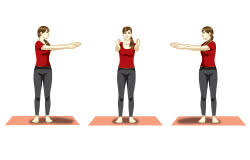

3
2
1
Stand up straight with your feet apart, spine erect and shoulders straight. Stretch your hands to the front, palms facing each other. First inhale and then while exhaling twist from the waist to the right and look back over the right. Keep your breath out and stay in this position as long as possible. Inhale and slowly come back to the center. Exhale and repeat the same on the left. Stay in this final posture as long as possible. Come back to the center and relax. This is the complete cycle of this posture. This can be repeated 10 to 20 times.

Back
START